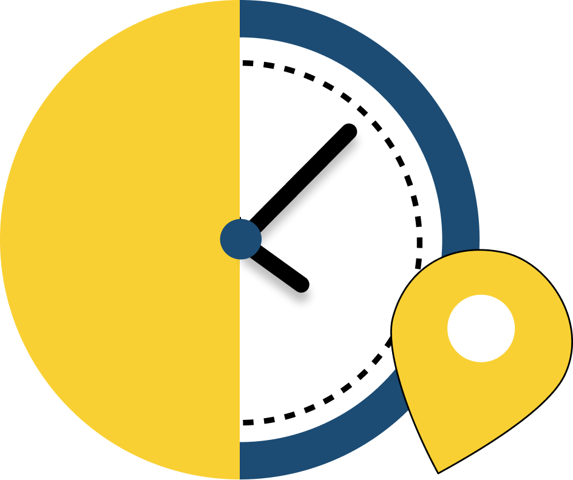

<nav [ngClass]="{'w-60': sidebarOpen, 'w-15': !sidebarOpen, 'transition-all': true, 'duration-300': true}"
    class="bg-[#1c4c74] text-white h-screen flex flex-col overflow-hidden h-[calc(100vh-80px)]">

    <!-- Header -->
    <header class="flex items-center justify-center p-2 border-b border-gray-700 overflow-hidden">

        <!-- (click)="toggleSidebar()" -->
        <button class="text-gray-400 focus:outline-none">
            
        </button>
    </header>

    <!-- Menu -->
    <div class="menu-bar flex-1 overflow-y-auto overflow-x-hidden">
        <div class="menu">
            <ul class="menu-links">
                <!-- Dashboard -->
                <li class="relative">
                    <a a routerLink="/{{routeService.admin}}" pTooltip="Time log" tooltipPosition="right">
                        <button
                            class="flex items-center justify-between w-full p-4 hover:bg-gray-700 focus:outline-none">
                            <div class="flex items-center gap-3">
                                <svg class="h-6 w-6 text-white" fill="none" viewBox="0 0 24 24" stroke="currentColor">
                                    <path stroke-linecap="round" stroke-linejoin="round" stroke-width="2"
                                        d="M4 6a2 2 0 012-2h2a2 2 0 012 2v2a2 2 0 01-2 2H6a2 2 0 01-2-2V6zM14 6a2 2 0 012-2h2a2 2 0 012 2v2a2 2 0 01-2 2h-2a2 2 0 01-2-2V6zM4 16a2 2 0 012-2h2a2 2 0 012 2v2a2 2 0 01-2 2H6a2 2 0 01-2-2v-2zM14 16a2 2 0 012-2h2a2 2 0 012 2v2a2 2 0 01-2 2h-2a2 2 0 01-2-2v-2z" />
                                </svg>
                                <span class="flex justify-start"
                                    [ngClass]="{'transition-all duration-300' : sidebarOpen}" *ngIf="sidebarOpen">
                                    Dashboard
                                </span>
                            </div>
                        </button>
                    </a>
                </li>
                <li class="relative">
                    <a routerLink="/admin/time-sheet" pTooltip="Attendance" tooltipPosition="right">
                        <button
                            class="flex items-center justify-between w-full p-4 hover:bg-gray-700 focus:outline-none">
                            <div class="flex items-center gap-3">
                                <svg class="h-6 w-6 text-white" fill="none" viewBox="0 0 24 24" stroke="currentColor">
                                    <path stroke-linecap="round" stroke-linejoin="round" stroke-width="2"
                                        d="M12 0c6.623 0 12 5.377 12 12s-5.377 12-12 12-12-5.377-12-12 5.377-12 12-12zm0 1c6.071 0 11 4.929 11 11s-4.929 11-11 11-11-4.929-11-11 4.929-11 11-11zm0 11h6v1h-7v-9h1v8z" />
                                </svg>
                                <span class="flex justify-start"
                                    [ngClass]="{'transition-all duration-300' : sidebarOpen}" *ngIf="sidebarOpen">
                                    Checking Time
                                </span>
                            </div>
                        </button>
                    </a>
                </li>

                <li class="relative">
                    <a routerLink="/admin/projects" pTooltip="Attendance" tooltipPosition="right">
                        <div class="flex items-center justify-center hover:bg-gray-700 p-4">
                            
                        </div>
                    </a>
                </li>


                <!-- Call Logs -->
                <!-- <li class="relative">
                    <button class="flex items-center justify-between w-full p-4 hover:bg-gray-700 focus:outline-none">
                        <div class="flex items-center gap-3">
                            <svg class="h-6 w-6 text-slate-500" width="24" height="24" viewBox="0 0 24 24"
                                stroke-width="2" stroke="currentColor" fill="none" stroke-linecap="round"
                                stroke-linejoin="round">
                                <path stroke="none" d="M0 0h24v24H0z" />
                                <path
                                    d="M5 4h4l2 5l-2.5 1.5a11 11 0 0 0 5 5l1.5 -2.5l5 2v4a2 2 0 0 1 -2 2a16 16 0 0 1 -15 -15a2 2 0 0 1 2 -2" />
                                <line x1="15" y1="7" x2="15" y2="7.01" />
                                <line x1="18" y1="7" x2="18" y2="7.01" />
                                <line x1="21" y1="7" x2="21" y2="7.01" />
                            </svg>
                            <span class="flex justify-start" [ngClass]="{'transition-all duration-300' : sidebarOpen}"
                                *ngIf="sidebarOpen">
                                Call Logs
                            </span>
                        </div>
                    </button>
                </li> -->


            </ul>
        </div>
    </div>

    <!-- Logout Button -->
    <footer class="border-t border-gray-700">
        <button routerLink="/{{routeService.login}}"
            class="flex items-center justify-between w-full p-4 mb-4 hover:bg-gray-700 focus:outline-none">
            <div class="flex items-center gap-3">
                <svg class="h-6 w-6 text-white" [ngClass]="{'mr-2': sidebarOpen }" fill="none" viewBox="0 0 24 24"
                    stroke="currentColor">
                    <path stroke-linecap="round" stroke-linejoin="round" stroke-width="2"
                        d="M11 16l-4-4m0 0l4-4m-4 4h14m-5 4v1a3 3 0 01-3 3H6a3 3 0 01-3-3V7a3 3 0 013-3h7a3 3 0 013 3v1" />
                </svg>
                <span class="flex justify-start" *ngIf="sidebarOpen">Logout</span>
            </div>
        </button>
    </footer>
</nav>